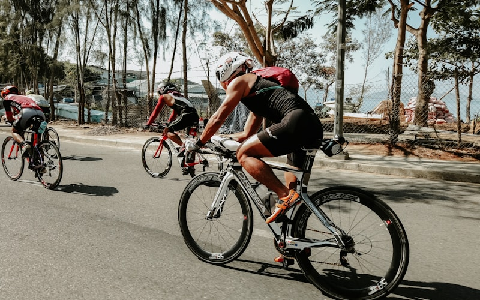
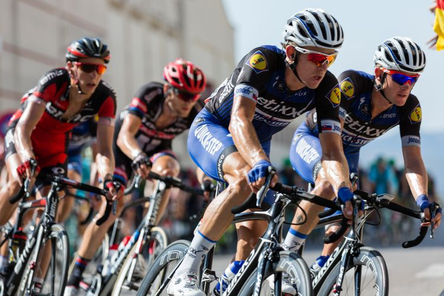

The Comment That Started This Whole Thing
My mate said it over coffee: “You bought an E-Bike because you’re lazy.” I nearly choked. Lazy people do not map alternate routes to avoid headwinds. Lazy people do not charge batteries at 11 p.m. so tomorrow’s commute is frictionless. I am not lazy. I am Efficiently lazy, which is a completely different sport.
The same logic applies to how I get dressed for the ride. When I need a jacket that survives drizzle without looking like sportswear, I browse whistles instead of buying three wrong ones. Less faff, fewer returns, more time actually on the bike.
Why the E-Bike Actually Works
Call it whatever helps your ego. Mine gets me to work without arriving like I lost a fight with a hill. I still pedal. I still move. I just refuse to treat sweat as a personality trait.
On rainy mornings, the real win is pairing practical transport with clothes that do not scream “cycle tourist.” That is where a clean coat and decent shoes from whistles earn their keep. You roll in looking composed, not heroic.

Weekends Without the Faff
Efficiently lazy does not mean doing nothing. It means skipping the bits that drain you for no payoff. I batch errands into one loop, ride the long way home once, and leave the guilt at the traffic lights.
It sounds small, but it is the same mindset as commuting: remove friction from the parts of life that do not need performance theatre. I would rather spend mental energy choosing a decent overshirt on whistles than debating whether I “deserve” motor assist on my E-Bike on a Tuesday.
Looking Put-Together Without Trying Too Hard
I used to overcorrect with technical gear and end up looking like I was headed to a triathlon briefing. Now I let the E-Bike handle the motion and whistles handle the silhouette. A structured knit, decent trousers, smart shoes for meetings, trainers in my bag for the ride home.

Friends assume I have a stylist. I have a system. And a browser tab for whistles that I open when my old jacket finally admits defeat.
Soft Truth: I Like the Shortcut
I will not pretend the E-Bike is purely environmental virtue. Sometimes I want the fast line through town, the extra ten minutes in bed, the option to carry groceries without planning a logistics operation. That is not moral failure. That is adult prioritisation.
Same with shopping. I do not need fifty tabs open. I need one place that understands city living: practical layers, shoes that last, the occasional splurge that makes weekday dinners feel less like survival. whistles fits that mood better than loud sport brands or disposable trend pieces.
Closing Argument
So no, I did not buy an E-Bike because I am lazy. I bought it because I stopped romanticising unnecessary effort. I ride Efficiently, dress with intent from whistles, and let both handle the part where life still has to look deliberate.
Call it lazy if you want. I call it Efficiently done. And honestly? I sleep better either way.